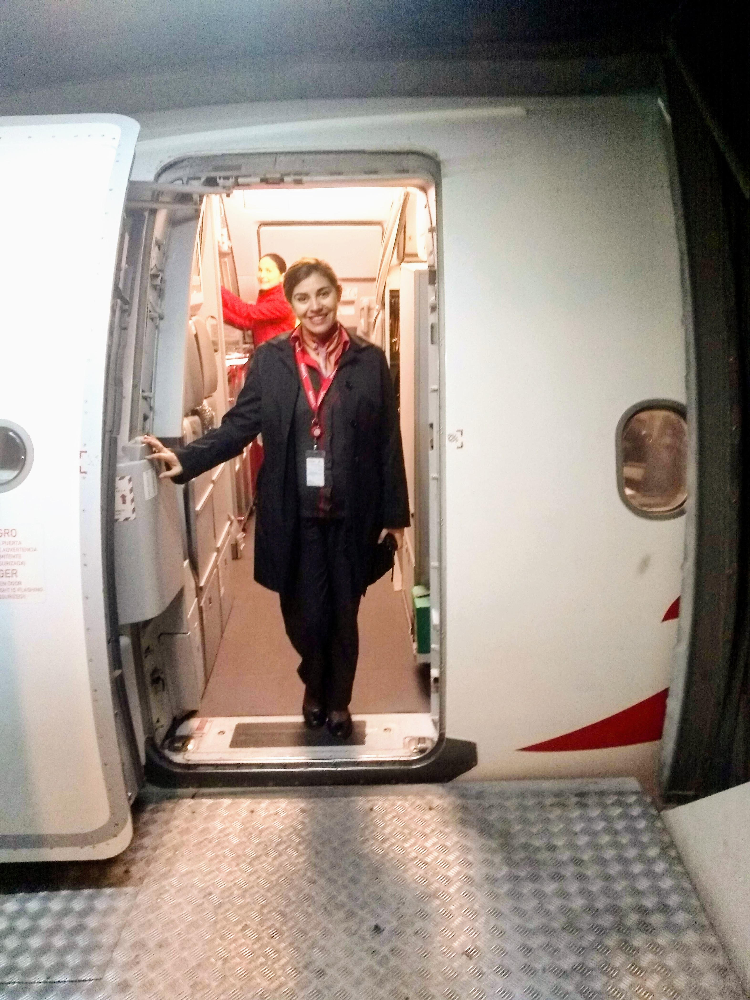
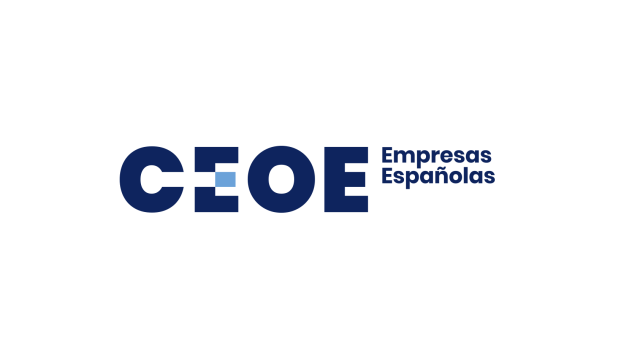
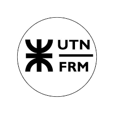

Sobre mí
Mi camino profesional comenzó en el mundo turístico y aeronáutico, donde desarrollé habilidades clave en atención al cliente, gestión de experiencias y trabajo en entornos dinámicos . Hoy combino esa experiencia con el marketing digital para ayudar a marcas turísticas a crear conexiones reales con sus clientes.

Mi experiencia
Aeronáutica
Experiencia en entorno aeroportuario desarrollando atención al pasajero, resolución de imprevistos, trabajo bajo presión y gestión de experiencias en contextos dinámicos.
Hotelería
5 años creando experiencias memorables para huéspedes, fortaleciendo habilidades de comunicación, empatía y calidad de servicio.
Customer Experience en gastronomía
Enfoque en atención personalizada, fidelización y mejora de la experiencia del cliente dentro del sector gastronómico.
Mi recorrido profesional se centra en la creación de experiencias humanas memorables en distintos entornos de servicio.
Formación
Tecnicatura en Turismo
Formación académica orientada a la innovación para la gestión turística, planificación de experiencias y desarrollo sostenible.
Marketing Digital
Especialización en estrategias digitales, posicionamiento de marca y mejora de la experiencia del cliente online.
Gastronomía
Conocimientos en gastronomía, cultura del vino y experiencias sensoriales aplicadas al desarrollo de propuestas diferenciales.
Mis formadores
Instituciones que marcaron mi desarrollo profesional y visión estratégica.

CEOE
La Confederación Española de Organizaciones Empresariales
Telefónica Educación Digital
Programa de formación digital impulsado por Fundación Telefónica

UTN FRM
Universidad Tecnológica Nacional - Facultad Regional Mendoza